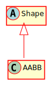

Hierarchy-Diagram
{kind=link}
Legend
 class
class
 abstract class
abstract class
 interface
interface
 public property
public property
 protected property
protected property
 private property
private property
 public method
public method
 protected method
protected method
 private method
private method
Hierarchy
- Shape
- AABB
Index
Constructors
Properties
Accessors
Methods
Constructors
constructor
Properties
center
half
Accessors
bottom
Returns number
bottom
Returns a point representing the bottom left corner of the AABB
Returns Vec2
bottom
Returns a point representing the bottom right corner of the AABB
Returns Vec2
hh
Returns number
hw
Returns number
left
Returns number
right
Returns number
top
Returns number
top
Returns a point representing the top left corner of the AABB
Returns Vec2
top
Returns a point representing the top right corner of the AABB
Returns Vec2
x
Returns number
y
Returns number
Methods
clone
Returns a copy of this Shape
Returns AABB
A new copy of this shape
contains
A simple boolean check of whether this AABB contains a point
Parameters
point: Vec2
The point to check
Returns boolean
A boolean representing whether this AABB contains the specified point
contains
A boolean check of whether this AABB contains a point with soft left and top boundaries. In other words, if the top left is (0, 0), the point (0, 0) is not in the AABB
Parameters
point: Vec2
The point to check
Returns boolean
A boolean representing whether this AABB contains the specified point
get
Gets a bounding circle for this shape. Warning - may be the same as this Shape. For instance, the bounding circle of a Circle is itself. Use clone() if you need a new shape.
Returns Circle
A Circle that bounds this shape
get
Gets a bounding rectangle for this shape. Warning - may be the same as this Shape. For instance, the bounding circle of an AABB is itself. Use clone() if you need a new shape.
Returns AABB
An AABB that bounds this shape
get
Returns Vec2
intersect
A simple boolean check of whether this AABB contains a point
Parameters
point: Vec2
The point to check
Returns boolean
A boolean representing whether this AABB contains the specified point
intersect
Returns the data from the intersection of this AABB with a line segment from a point in a direction
Parameters
point: Vec2
The point that the line segment starts from
delta: Vec2
The direction and distance of the segment
Optional padding: Vec2
Pads the AABB to make it wider for the intersection test
Returns Hit
The Hit object representing the intersection, or null if there was no intersection
overlap
Calculates the area of the overlap between this AABB and another
Parameters
other: AABB
The other AABB
Returns number
The area of the overlap between the AABBs
overlaps
Checks if this shape overlaps another
Parameters
other: Shape
Returns boolean
a boolean that represents whether this Shape overlaps the other one
Protected overlapsAABB
A simple boolean check of whether this AABB overlaps another
Parameters
other: AABB
The other AABB to check against
Returns boolean
True if this AABB overlaps the other, false otherwise
set
Parameters
halfSize: Vec2
Returns void
sweep
Moves and resizes this rect from its current position to the position specified
Parameters
velocity: Vec2
The movement of the rect from its position
Optional fromPosition: Vec2
A position specified to be the starting point of sweeping
Optional halfSize: Vec2
The halfSize of the sweeping rect
Returns void
to
Converts this AABB to a string format
Returns string
(center: (x, y), halfSize: (x, y))
touchesAABB
Determines whether these AABBs are JUST touching - not overlapping. Vec2.x is -1 if the other is to the left, 1 if to the right. Likewise, Vec2.y is -1 if the other is on top, 1 if on bottom.
Parameters
other: AABB
The other AABB to check
Returns Vec2
The collision sides stored in a Vec2 if the AABBs are touching, null otherwise
touchesAABBWithout
Determines whether these AABBs are JUST touching - not overlapping. Also, if they are only touching corners, they are considered not touching. Vec2.x is -1 if the other is to the left, 1 if to the right. Likewise, Vec2.y is -1 if the other is on top, 1 if on bottom.
Parameters
other: AABB
The other AABB to check
Returns Vec2
The side of the touch, stored as a Vec2, or null if there is no touch
An Axis-Aligned Bounding Box. In other words, a rectangle that is always aligned to the x-y grid. Inspired by the helpful collision documentation @link(here)(https://noonat.github.io/intersect/).